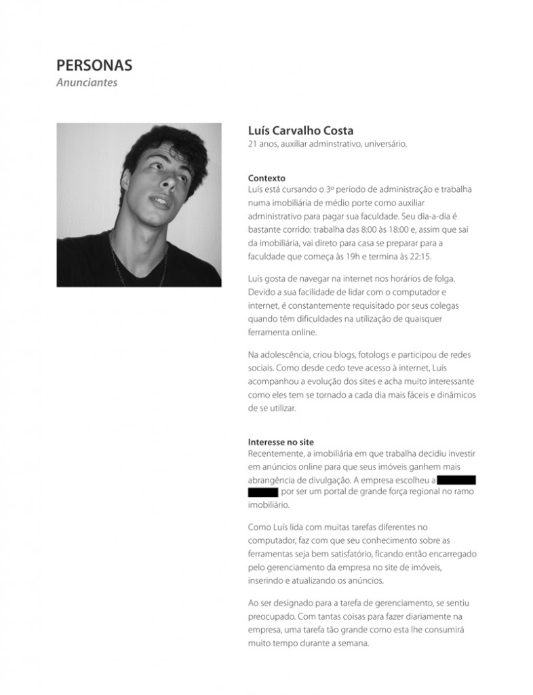

Estava pensando no que escrever como primeiro post para o blog, então lembrei que a Núbia Souza me perguntou como crio personas. Como não a respondi ainda, decidi fazer isso por meio de um post que abordasse a criação de personas e cenários.
Quero deixar claro que este conteúdo não se trata de um guia-modelo para a criação de personas, é apenas a forma como desenvolvo as minhas. Não significa que você deva fazer exatamente como eu apresento, pelo contrário: tire proveito dos meus relatos e adapte-os ao seu modo de trabalhar.
O que são personas e qual sua importância?
Personas são personagens criados com a função de representar o público no qual um produto que está sendo desenvolvido se destina. Esses perfis ajudam a entender melhor para quem estamos criando, auxiliando nas tomadas de decisões.
Quem são as pessoas que utilizarão o produto? Como elas são? Como é o seu dia-a-dia? Qual o seu nível de intimidade com o computador e internet? Qual o interesse no produto? Como o utilizariam?
Vejo que para muitas pessoas a criação de personas se trata de um fardo desnecessário a carregar. Buscar informações sobre o público e construir pessoas fictícias com base nesses dados pode não ser fácil, e nem rápido. O que ainda não é percebido por muitos profissionais é que o tempo usado na criação de personas, na verdade, se trata de um investimento. Entender o público-alvo ajuda a manter o foco e principalmente prevenir erros – MUITOS erros.
O X da questão é: se você não compreende para quem está criando um produto, como acha que tomará as decisões certas e conseguirá bons resultados com o seu projeto?
Ligação entre personas e cenários
Enquanto a persona é a representação do usuário, o cenário é uma “estória” que trata do mesmo dentro de um contexto: seu cotidiano, motivações, interesses e expectativas relacionadas ao produto.
A partir dos cenários, conseguimos imaginar como os usuários podem lidar com certas tarefas, e extrair diversos insights e orientações quanto às reais necessidades do usuário. É através dos cenários que podemos nos deparar com situações e prever comportamentos.
Como saber quem as personas devem representar?
Num caso perfeito, começaríamos utilizando os dados de uma pesquisa feita sobre o público-alvo. Porém, infelizmente, na maioria dos projetos ela não existe. Para esses casos, as informações sobre o público são passadas pelo cliente no momento da entrevista, mas… cuidado: nem sempre o cliente sabe quem realmente é o seu público, apenas supõe (isso fica de assunto para outro post).
É importante ficar atento para não começar a perder o foco no público que realmente importa, pois vários perfis de usuários podem surgir neste momento. Sugiro manter as personas em um pequeno número e garantir que elas representem bem o público, pois com muitas variações não conseguiremos priorizar nada.
Como é um documento de persona?
O documento de criação das personas é parecido com uma ficha, e contém nome, foto, descrição sobre a pessoa e o que mais se mostrar necessário. A complexidade do detalhamento do perfil dependerá do projeto.
Devemos trazer nosso personagem à realidade, e para isso é importante o enriquecermos com informações úteis e reais. Nada de “encher linguiça” só para finalizar mais uma etapa do projeto e mostrar serviço. Uma persona fantasiosa não passa credibilidade e perde o seu propósito.
Personas bem fundamentadas auxiliam para que o projeto flua com mais segurança e foco, transmitindo a todos os envolvidos – inclusive o cliente – maior consciência sobre as necessidades reais do público. Além disso, as personas são fortes aliadas no momento de argumentar e defender o seu projeto.
Algumas perguntas que nos orientam durante a criação:
Quem é essa pessoa?
Qual a sua idade?
É casado(a)? Solteiro(a)? Tem filhos?
Onde vive?
No que trabalha?
Como é o seu dia-a-dia?
Qual o nível de conhecimento sobre computador/internet?
Do que ela necessita?
Como nosso produto afeta sua vida?
Hora de montar o documento e garantir que todos os envolvidos tenham acesso a ele. Eu gosto de imprimir e colar todas as minhas personas numa parede próxima. Assim posso vê-las a todo momento e reforçar para mim mesma o meu propósito com elas.
Como exemplo de uma situação real, vocês podem ver a seguir 2 das personas que criei para meu último projeto – portal de classificados de imóveis de uma startup. Uma representa parte dos usuários que utilizarão o site para encontrar imóveis e a outra parte dos que publicarão esses imóveis.
Este é o Edmundo e ele está interessado em comprar um imóvel:

PDF do documento de persona: Edmundo
E este é o Luis, encarregado de anunciar online os imóveis da imobiliária onde trabalha:

PDF do documento de persona: Luís
Criar personas e imaginar cenários, além de todos os benefícios que citei, é uma coisa bem legal de se fazer! Você vai se divertir imaginando essas pessoas, te garanto!
Quem quiser outras referências sobre o assunto, recomendo fortemente que visitem esse post do Usabilidoido que, para mim, é um dos mais relevantes.
E vocês? Como criam suas personas?

{kind=link}